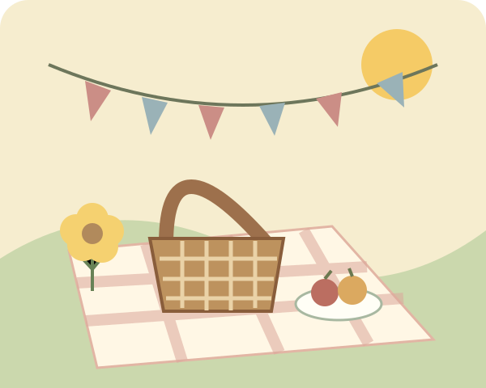

ZOE, TAYLOR AND GABBY · AN ADVENTURE FOR EMILY
Our friends’
Picnic
Friends, a picnic and little ideas to practise.

A PICNIC FOR ALL OUR FRIENDSDEAR EMILY…A little picnic.
A little picnic.
A whole lot of friendship.
Zoe, Taylor and Gabby are making a picnic with Mia and Ben. Come and help!
Read together, try familiar ideas in new ways and collect six picnic treats. One short chapter is enough for today.
No timer. Take a little break whenever you like.OUR PICNIC ADVENTURE
Let’s pack our picnic
GOOD THINGS HAPPEN WHEN FRIENDS WORK TOGETHER
Our picnic is ready, Emily!
You helped your friends share, read and think. Time for a picnic!
★★★★★
Back to my adventures →Your adventure waits for you here.